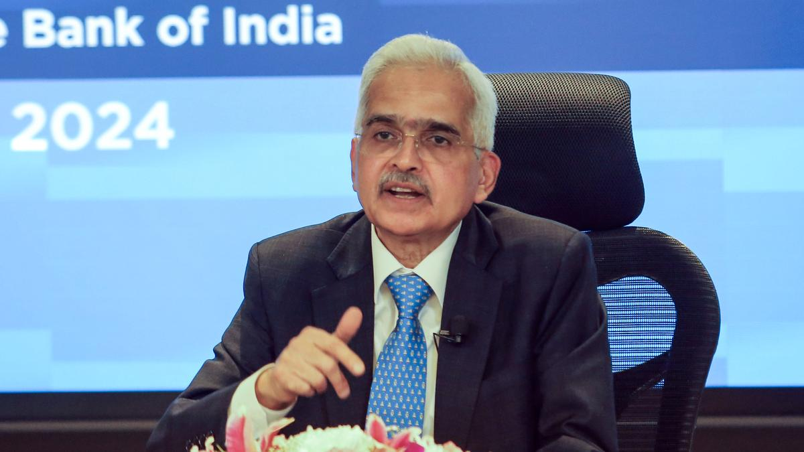
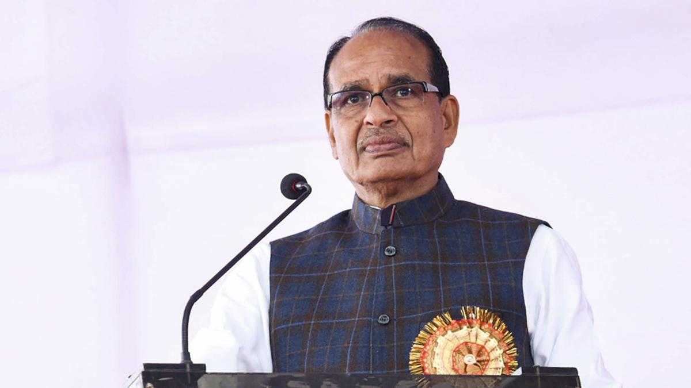

Latest News from India
🇪🇺 EU Chief Ursula von der Leyen and Commissioners to Visit India (Feb 27-28)

The European Commission President and her team will be in India to discuss trade, technology, and geopolitical relations. This visit is seen as a key step in strengthening India-EU ties.
At the invitation of Prime Minister Shri Narendra Modi, President of the European Commission, H.E. Ms. Ursula von der Leyen, accompanied by the European Union College of Commissioners, will pay an official visit to India on 27-28 February 2025.
- This will be President Ursula von der Leyen’s third visit to India. She has earlier visited India for a bilateral official visit in April 2022, and to attend the G20 Leaders’ Summit in September 2023. Prime Minister and President Ursula von der Leyen have also met regularly on the sidelines of multilateral meetings.
- This will be the first ever visit of the EU College of Commissioners together to India and among the first such visits since the start of the mandate of the current European Commission in December 2024 after the European parliamentary elections held in June 2024.
- During the visit, Prime Minister will hold delegation level talks with President Ursula von der Leyen. The second ministerial meeting of the India – EU Trade and Technology Council and bilateral ministerial meetings between the European Commissioners and their Indian counterparts will also be held during the visit.
- India and European Union are strategic partners since 2004 and their bilateral ties have expanded and deepened across a wide range of areas. As the two sides enter the third decade of the strategic partnership, the visit of President von der Leyen and the EU College of Commissioners will pave the way for further strengthening of bilateral relations based on growing convergences.
🇮🇳 PM Modi Must Refute U.S. Allegations, Says Congress
Congress Spokesperson Pawan Khera urged PM Narendra Modi to address allegations that the U.S. was about to provide $21 million for increasing voter turnout in India.
The political row over the reported $21 million USAID funding for voter turnout in India continued into Saturday (February 22, 2025), with the Congress citing a U.S. media report and doubling down on its demand of a white paper on the USAID funding as well as funding by other such agencies in India. The party also added that Prime Minister Narendra Modi must “talk to his friend, U.S. President Trump and strongly refute the allegation.”
Congress leader Pawan Khera, in a statement, said that while the BJP and its allies are “desperately tying themselves in knots to somehow prove their allegation of “Deep State and ‘Foreign Intervention’ with regards to “$21 million USAID funds narrative’,” several Indian news media outlets have fact checked the claim as untrue. He also went on to cite a report by Washington Post which “found no evidence that $21 million was due to be spent for voter turnout in India or for any other purpose.”
⚖️ Supreme Court to Hear AAP Leader Durgesh Pathak’s Plea on Feb 22
The Supreme Court is set to hear the petition challenging the election of AAP leader Durgesh Pathak in the 2022 bypolls. The case revolves around alleged electoral irregularities.
The Supreme Court is scheduled to hear on Monday (February 24, 2025) a plea of Aam Aadmi Party (AAP) leader Durgesh Pathak for the dismissal of a petition challenging his election from Delhi's Rajinder Nagar Assembly seat in a 2022 bypoll.
📈 Shaktikanta Das Appointed as Principal Secretary II to PM
Former Reserve Bank of India Governor Shaktikanta Das has been appointed as the Principal Secretary-2 to Prime Minister Narendra Modi, a key role in shaping India’s economic policies.
🚔 Billionaire’s Daughter Shares Ordeal in Ugandan Jail
Vasundhara Oswal, daughter of Indian-origin billionaire Pankaj Oswal, spoke out about her “gross violation of human rights” experience in a Ugandan prison.
✈️ Union Minister Slams Air India Over ‘Broken Seat’
Union Minister Shivraj Singh Chouhan criticized Air India for a broken seat on a recent flight, calling it a poor experience for travelers. The airline later issued an apology.
It is “immoral” on Air India’s part and a “betrayal” of passengers’ trust to sell them broken seats, Union Minister for Agriculture Shivraj Singh Chouhan said, hitting out at the airline after being assigned an “unserviceable” seat on a Bhopal-Delhi flight on Saturday (February 22, 2025). “I am not concerned about my personal discomfort, but charging passengers full fare while providing them with broken and uncomfortable seats is unethical. Is this not a betrayal of passengers’ trust? I had assumed that Air India’s service had improved under Tata’s management, but I was mistaken,” the Minister said in a post on social media platform X.
📺 Govt Examining New Legal Framework for Digital Content
The Information & Broadcasting Ministry is reviewing existing regulations and considering new legal measures to control the spread of fake news and harmful digital content.